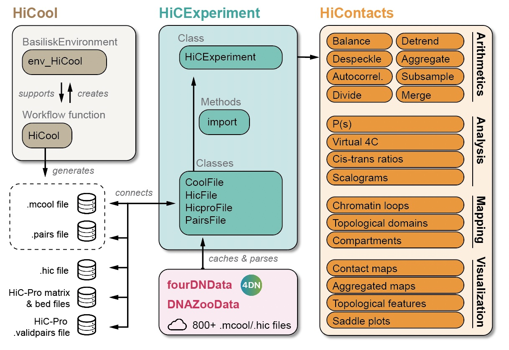

Preamble
Hi-C is an experimental method to quantify spatial interactions between any pair of genomic loci. While a number of command-line interfaces (CLI) exist to process and manipulate Hi-C data (e.g. cooler (Abdennur & Mirny (2019)), juicer (Durand et al. (2016)) and HiC-Pro (Servant et al. (2015))), they generally suffer from several limitations often found in emerging genomics techniques:
- No genomic representation of Hi-C processed data: the existing CLIs can efficiently parse Hi-C data as a numerical matrix and perform a few standard quantitative operations (e.g. contact matrix binning and normalization, dimensionality reduction, etc). However, they systematically fail to represent a Hi-C contact matrix as a genomic object. Qualitative analyses (e.g. intersecting chromatin loops with genomic features, finding genes overlapping with domains, etc) therefore remain extremely tedious.
- No format-agnostic analysis libraries. Three competing file format standards (
.(m)cool,.hicandHiC-Profiles) currently exist to store Hi-C processed data and dedicated CLIs propose sets of tools specifically working with their corresponding Hi-C processed data file format. This has curbed the development of generic Hi-C data analysis libraries by favoring the emergence of several redundant tools. - Lack of integration within a biology-oriented community. While rapid development of Hi-C analysis methodology is ongoing, it is primarily driven by small-scale teams rather than by a community as a whole. This oriented development is less likely to fulfill the needs met by other investigators.
In this book, we provide an overview of a set of tools that enable processing, visualization and in-depth investigation of Hi-C data in R, ensuring intuitive integration of Hi-C data in the existing Bioconductor ecosystem. We introduce a high-level HiCExperiment data structure to represent Hi-C data, directly extending robust, pre-existing core genomic classes offered by Bioconductor. This guarantees a stable and intuitive Hi-C data representation in R as a genomic entity, which is highly interoperable and can be used by all existing analysis packages in R.

On top of the HiCExperiment data structure, the HiContacts package offers extended functionalities to perform matrix-centric and interaction-centric analysis directly on HiCExperiment objects and provides powerful visualization tools specifically designed for Hi-C data to facilitate exploratory data analysis. In addition, the HiCool package implements a processing workflow based on a lightweight library to process raw Hi-C data into binned Hi-C contact matrices ready to be imported as HiCExperiment objects. Finally, the fourDNData and DNAZooData packages offer a gateway to major public data repositories directly in R.

Package status
| Github repo üíæ | Doc üìò | Github checks ✅ | Bioc builds üèó | Lifecycle üå± |
|---|---|---|---|---|
| HiCExperiment | Doc | Bioc release: Bioc devel:  |
||
| HiContacts | Doc | Bioc release: Bioc devel:  |
||
| HiCool | Doc | Bioc release: Bioc devel:  |
||
| HiContactsData | Doc | Bioc release: Bioc devel: |
||
| DNAZooData | Doc | Bioc release: Bioc devel: |
||
| fourDNData | Doc | Bioc release: Bioc devel: |